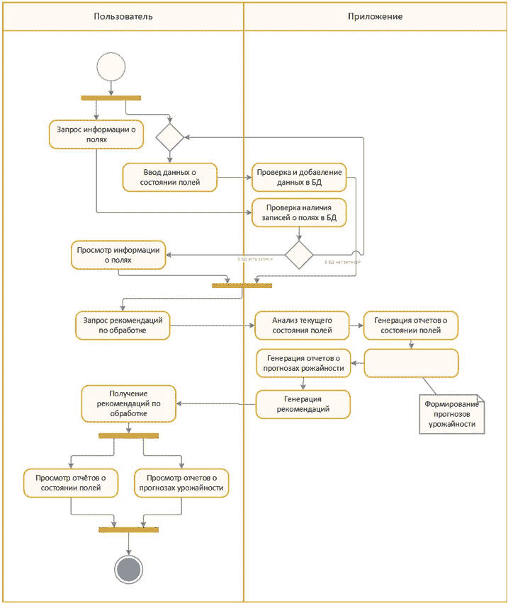

Ляшенко Ю.А., Савкова Е.О. Разработка функциональной структуры системы цифрового учета в малом аграрном бизнесе. В статье рассматриваются способы влияния цифровизации на аграрный сектор и акцентируется её важность для повышения эффективности и конкурентоспособности работы сельскохозяйственных предприятий. Анализируются текущие проблемы внедрения технологий, такие как нехватка инфраструктуры и сложность интеграции, а также предлагается разработка нового приложения, адаптированного под зерновые культуры и совместимого с существующими решениями.
ЦИФРОВИЗАЦИЯ, СЕЛЬСКОЕ ХОЗЯЙСТВО, ЭФФЕКТИВНОСТЬ, ЦИФРОВЫЕ ТЕХНОЛОГИИ, АГРАРНЫЕ ПРЕДПРИЯТИЯ.
В современном мире цифровизация является неотъемлемой частью развития различных отраслей, в том числе и сельского хозяйства. Несмотря на то, что цифровые технологии выступают ключевым фактором конкурентоспособности, их внедрение связано с определёнными вызовами, требующими решений на разных уровнях управления и организации сельскохозяйственного производства.
Цифровизация в аграрном секторе — это уже не просто модный тренд, а насущная необходимость. Согласно исследованию Торикова В.Е. и соавт., цифровая трансформация сельского хозяйства позволяет сократить до 30% затрат за счёт более точного планирования и автоматизации рутинных процессов [1].
Вопрос цифровизации в сельском хозяйстве рассматривается в немногочисленных работах:
Одной из основных проблем, с которой сталкиваются сельскохозяйственные предприятия при внедрении цифровых технологий, является недостаток инфраструктуры и информационных технологий в сельских регионах. Малые и средние аграрные хозяйства не обладают необходимыми ресурсами для цифровизации. Это включает в себя не только оборудование и программное обеспечение, но и квалифицированные кадры, способные работать с новыми технологиями.
Помимо этого, проблемой является сложность интеграции цифровых решений в существующие бизнес-процессы поскольку для многих предприятий привычные методы управления процессами кажутся более надёжными, несмотря на их меньшую эффективность.
Также, существует проблема стандартизации данных, которая заключается в том, что различные цифровые платформы используют разные стандарты, что затрудняет обмен информацией и взаимодействие между системами. Это особенно важно для больших предприятий, работающих в условиях интеграции с международными рынками.
Несмотря на существующие вызовы, современные технологии предлагают множество решений, которые могут существенно повысить эффективность сельскохозяйственного производства. Подобные системы уже существуют, однако большинство из них не работает на территории РФ: Agrobase, Agroresult, FarmDok, Caynax Gardener, Fermable, Protector Scouting, Filedmargin, FarmerJoe, AgroIntegratorApp, OneSoil Scouting.
Есть лишь два приложения, которые можно использовать аграриям России: OneSoil Scouting и AgroIntegratorApp. Сравнительная информация приложений приведена в таблице 1.1.
| Параметр | OneSoil Scouting | AgroIntegratorApp |
|---|---|---|
| Название системы | OneSoil Scouting | AgroIntegratorApp |
| Разработчик | OneSoil | AgroTech Solutions Ltd. |
| Класс системы | Агротехнологическая ERP | ERP-система |
| Основное назначение | Предоставление инструментов для проверки состояния полей и принятия решений по управлению посевами | Управление всеми аспектами аграрного предприятия |
| Технологии | Искусственный интеллект, обработка изображений, аналитика данных, технологии связи, облачные технологии, интеграция с другими системами | Интеграция с другими системами, SQL, аналитика данных |
| Стоимость | Бесплатное приложение для работы только с 3 полями; внедрение дронов и датчиков отслеживания стоит денег | Бесплатное приложение |
| Недостатки | Неудобный интерфейс, много ненужной информации, недостоверная информация на картах, ограниченные возможности мобильного приложения, отсутствие некоторых необходимых проверок дат, отсутствие учета химических и минеральных удобрений, веб-версия работает только с VPN | Не поддерживает определенные области РФ, неудобный интерфейс, сбои в приложении, отсутствие карты и учета химических и минеральных удобрений |
Проанализировав все достоинства и недостатки существующих систем, можно сделать вывод о необходимости создания нового приложения, которое будет иметь более широкий функционал, использовать современные технологии мониторинга и аналитики данных. Будущая система должна анализировать текущее состояние полей и прогнозировать потенциальные урожайности.
Помимо этого, важным аспектом является интеграция системы с существующими цифровыми решениями для минимизации дублирования работы и простоты передачи информации. Поскольку многие пользователи могут не иметь достаточный опыт в области информационных технологий, то приложение должно содержать интуитивно понятный интерфейс. Следует также предусмотреть адаптацию системы к тому, что в разных регионах России различные климатические и экономические особенности.
Внедрение таких решений повысит эффективность агропромышленных предприятий и значительно улучшит управление процессами на всех бизнес-уровнях. К тому же, внедрение современных технологий, таких как искусственный интеллект и машинное обучение, может помочь в расчете более точной оценки состояния сельскохозяйственных культур, прогнозировании урожайности и оптимизации применения ресурсов.
Таким образом, разработка нового приложения для учета состояния сельскохозяйственных полей станет важным шагом в цифровизации аграрного сектора. Это позволит сельскохозяйственным предприятиям повысить эффективность управления и улучшить качество принятия решений на основе аналитики данных. В будущем такие системы могут быть модифицированы за счет внедрения блокчейн-технологий для повышения прозрачности цепочки поставок и улучшения контроля качества продукции.
Предложенная цифровая система управления аграрным предприятием — это разработка, объединяющая методы цифрового мониторинга, агрономического планирования и экономической аналитики. Её ядро — интеллектуальный модуль управления полевыми процессами, взаимодействие с которым представлено в виде диаграммы деятельности (рис.1).
Диаграмма описывает полный цикл действий пользователя в системе — от инициализации работы до получения отчётов и аналитики. Такой подход позволяет визуализировать цифровую трансформацию бизнес-процессов в сельском хозяйстве.

Рассмотрим подробнее диаграмму деятельности.
Диаграмма представляет собой модель взаимодействия между пользователем (левый столбец) и приложением (правый столбец), которая реализует процесс цифрового управления аграрной информацией о полях.
Диаграмма демонстрирует интуитивный и адаптивный путь пользователя через цифровую платформу, в центре которого — данные и их трансформация в решения. Это отражает одну из важнейших тенденций цифровизации: переход от ручного контроля к интеллектуальной поддержке решений.
В этой статье предложен конкретный путь решения — разработка простой и понятной системы, которая будет не просто собирать данные о полях, а помогать принимать решения: когда и чем обрабатывать, что сеять, как спрогнозировать урожай. Сама структура системы построена так, чтобы фермеру было легко и логично ей пользоваться. Это видно из представленной диаграммы деятельности, где каждый шаг пользователя сопровождается действием со стороны системы — от запроса информации до получения отчётов и рекомендаций.
В перспективе, интеграция с глобальными системами управления может открыть новые рынки и возможности для сельскохозяйственных предпринимателей, что в конечном итоге положительно скажется на развитии агропромышленного комплекса в России и на уровне международной торговли.